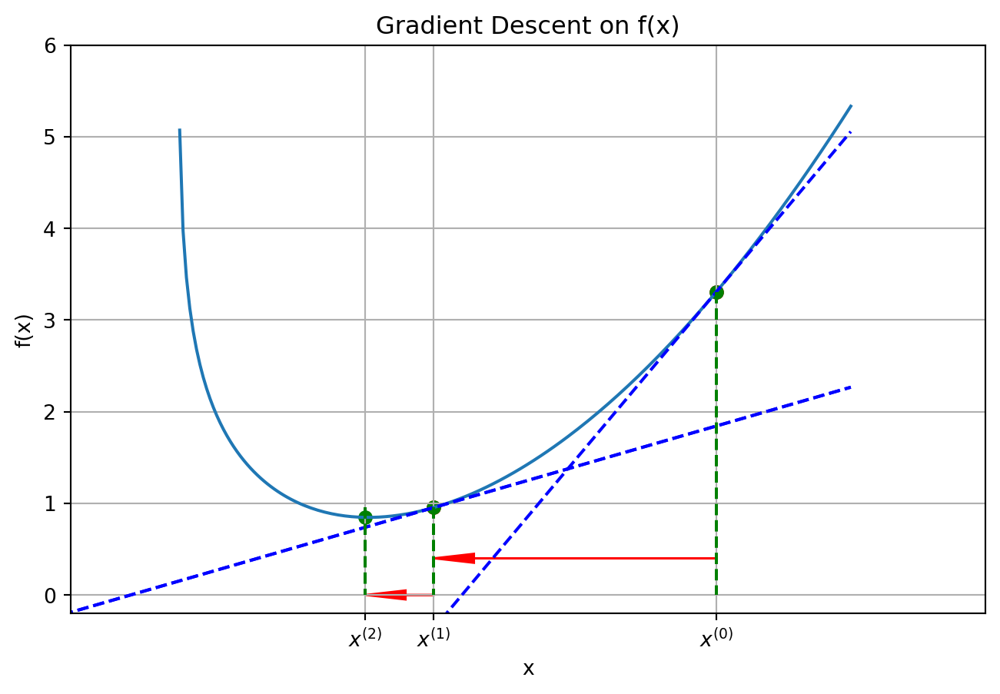
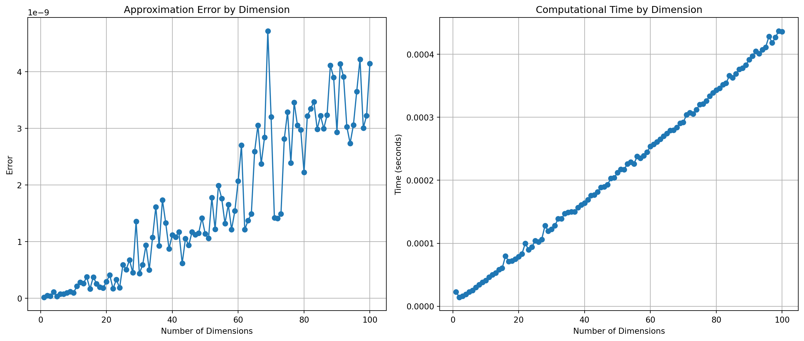

Optimization is a field of mathematics that focuses on the problem of finding the solution to a minimization problem. More precisely, given a function \(f:\mathbb{R}^{k}\to \mathbb{R}\), we seek \(x^{*}\in\mathcal{C}\subset \mathbb{R}^{k}\) such that \[
f(x^{*}) \leqslant f(x) \text{ for all }x\in\mathcal{C}.
\] The set \(\mathcal{C}\) constraints the solution to leave in a subset of \(\mathbb{R}^{k}\)
When \(\mathcal{C}\) coincides with \(\mathbb{R}^k\) the problem is said to be unconstrained.
In unconstrained optimization, the objective function \(f(x)\) needs to be minimized (or maximized) without any restrictions on the variable \(x\). The problem is described as \[
\min_{x} f(x), \quad x\in\mathbb{R}^k.
\]
Many problems involve constraints that the solution must satisfy, that is, \(\mathcal{C}\) does not coincide with \(\mathbb{R}^k\). For instance, we want to minimize the function over a space where \(x_j < c_j\), \(c_j\in\mathbb{R}\), \(j=1,\ldots,k\) or we may be interested in values of \(x\) that minimizes \(f\) when certain restrictions are satisfied. Generally, the constrained optimization is \[
\begin{aligned}
&\min_{x} \ f(x) \\
&\text{subject to} \\
& \ g_i(x) \leq 0, \quad i = 1, \ldots, m, \\
& \ h_j(x) = 0, \quad j = 1, \ldots, p.
\end{aligned}
\] Here, \(g_i(x)\) and \(h_j(x)\) are functions that represent inequality and equality constraints.
In what follows, we will focus on the class of unconstrained problems where \(f\) is smooth, that is, a function that everywhere continuously differentiable.
A point \(x^*\) is a global minimizer of \(f\) if \(f(x^*)\leqslant f(x)\) for all \(x\) ranging over of of \(\mathbb{R}^k\).
The global minimizer can be difficult to find. The algorithms to solve Equation 1 exploit local knowledge of \(f\), we do not have a clear picture of the overall shape of \(f\) and, as such, we cannot ever be sure that the solution we find is indeed a global solution to the minimization problem. Most algorithms are able to find only a local minimizer, which is a point that achieves the samllest value of \(f\) in a neighborhood of \(x\).
A point \(x^*\) is a local minimizer if there is a neighborhood1\(\mathcal{N}\) of \(x^*\) such that \(f(x^*)\leqslant f(x)\) for all \(x\in\mathcal{N}\).
A point \(x^*\) is a strict local minimizer if there a neighborhood of \(\mathcal{N}\) such that \(f(x^*) < f(x)\) for all \(x\in \mathcal{N}\).
For instance, for the function \(f(x) = 2024\), every point is a weak local minimizer, while the function \(f(x) = (x-a)^2\) has a strict local minimizer at \(x=a^{-1}\).
Notation: Given a function \(f:\mathbb{R}^k\to\mathbb{R}\), the gradient of \(f\) evaluated at \(x^o\) is: \[
\nabla f(x^o) := \begin{pmatrix}\left.\frac{\partial f(x)}{\partial x_{1}}\right|_{x=x^{o}}\\
\left.\frac{\partial f(x)}{\partial x_{2}}\right|_{x=x^{o}}\\
\vdots\\
\left.\frac{\partial f(x)}{\partial x_{k}}\right|_{x=x^{o}}
\end{pmatrix}.
\] Similarly, the \(k\times k\)hessian matrix of \(f\) evaluated at \(x^o\) is \[
\nabla^{2}f(x^{o})=\begin{pmatrix}\left.\frac{\partial^{2}f(x)}{\partial x_{1}\partial x_{1}}\right|_{x=x^{o}} & \left.\frac{\partial^{2}f(x)}{\partial x_{1}\partial x_{2}}\right|_{x=x^{o}} & \cdots & \left.\frac{\partial^{2}f(x)}{\partial x_{1}\partial x_{k}}\right|_{x=x^{o}}\\
\left.\frac{\partial^{2}f(x)}{\partial x_{2}\partial x_{1}}\right|_{x=x^{o}} & \left.\frac{\partial^{2}f(x)}{\partial x_{2}\partial x_{2}}\right|_{x=x^{o}} & \cdots & \left.\frac{\partial^{2}f(x)}{\partial x_{2}\partial x_{k}}\right|_{x=x^{o}}\\
\vdots & \vdots & & \vdots\\
\left.\frac{\partial^{2}f(x)}{\partial x_{k}\partial x_{1}}\right|_{x=x^{o}} & \left.\frac{\partial^{2}f(x)}{\partial x_{k}\partial x_{2}}\right|_{x=x^{o}} & \cdots & \left.\frac{\partial^{2}f(x)}{\partial x_{k}\partial x_{k}}\right|_{x=x^{o}}
\end{pmatrix}.
\]
Fundamental mathematical tools
The necessary conditions for optimality are derived assuming that \(x^*\) is a local minimizer and the proving facts about \(\nabla f(x^*)\) and \(\nabla^2 f(x^*)\).
Theorem 1 If \(x^*\) is a local optimizer and \(f\) is continuously differentiable in an open neighborhood of \(x^*\), then \(\nabla f(x^*)=0\) (first-order necessary condition); if \(\nabla^2 f\) exists and its continuous in an open neighborhood of \(x^*\), then \(\nabla^2 f(x^*)\) is positive definite (second-order necessary conditions).2
Sufficient conditions for optimality are conditions on the derivatives of \(f\) at the point \(x^*\) that guarantee that \(x^*\) is a local minimizer.
Theorem 2 Suppose that \(\nabla^2 f(x^*)\) is continuous in an open neighborhood of \(x^*\) and that \(\nabla f(x^*)=0\) and \(\nabla^2 f(x^*)\) is positive definite. Then \(x^*\) is a strict local minimizer of \(f\).
The second-order sufficient conditions guarantee something stronger than the necessary conditions; namely, that the minimizer is a strict local minimizer. Note too that the second-order sufficient conditions are not necessary: a point \(x^∗\) may be a strict local minimizer, and yet may fail to satisfy the sufficient conditions. A simple example is given by the function \(f(x) = x^3\), for which the point \(x^∗=0\) is a strict local minimizer at which the Hessian matrix vanishes (and is therefore not positive definite).
When the objective function is convex, local and global minimizers are simple to characterize.
Theorem 3 When \(f\) is convex, any local minimizer of \(x^*\) is a global minimizer of \(f\). If in addition, \(f\) is differentiable, any stationary point \(x^*\) is a global minimizer.
Example 1 The sum of square residuals \[
SSR(\beta) = \sum_{i=1}^n (Y_i - X'_i\beta)^2
\] is strictly convex provided that \(\sum_{i=1}^n X_iX'_i\) is invertible (that is, it has full column rank).
Overview of algorithms
A common approach to optimization is to incrementally improve a point \(x\) by taking a step that minimizes the objective value based on a local model. The local model may be obtained, for example, from a first- or second-order Taylor approximation. Optimization algorithms that follow this general approach are referred to as descent direction methods. They start with a design point \(x^{(0)}\) and then generate a sequence of points, sometimes called iterates, to converge to a local minimum.
import numpy as npimport matplotlib.pyplot as plt# Define the function and its derivativedef f(x):return x**2- np.log(x)def df(x):return2*x -1/xdef connectpoints(x,y,p1,p2): x1, x2 = x[p1], x[p2] y1, y2 = y[p1], y[p2] plt.plot([x1,x2],[y1,y2],'k-')# Initial pointx0 =2alpha =0.3# Gradient descent updatex1 = x0 - alpha * df(x0)x2 = x1 - alpha * df(x1)# Points for the function plotx = np.linspace(-2.5, 2.5, 400)y = f(x)# Tangent line at x0 (y = m*x + b)# Creating the plotplt.figure(figsize=(8, 5))plt.plot(x, y, label='f(x) = x^2')plt.scatter([x0, x1], [f(x0), f(x1)], color='red') # Pointsm = df(x0)b = f(x0) - m*x0tangent_line = m*x + bplt.plot(x, tangent_line, 'b--', label=f'Tangent at x0={x0}')plt.arrow(x0, 0.4, x1-x0, 0.0, head_width=0.1, length_includes_head=True, color ='r')m = df(x1)b = f(x1) - m*x1tangent_line = m*x + bplt.plot(x, tangent_line, 'b--', label=f'Tangent at x0={x1}', )plt.ylim([-0.2,6])plt.xlim([-0.4,3])plt.plot(x, tangent_line, 'b--', label=f'Tangent at x0={x1}', )m = df(x0)b = f(x0) - m*x0tangent_line = m*x + bplt.scatter(x0, f(x0), color='green') # Initial pointplt.scatter(x1, f(x1), color='green') # Next point after stepplt.scatter(x2, f(x2), color='green') # Next point after stepplt.arrow(x1, 0., x2-x1, 0., head_width=0.1, length_includes_head=True, color ='r')plt.title('Gradient Descent on f(x)')plt.xlabel('x')plt.ylabel('f(x)')plt.xticks([]) # Remove x-axis ticksplt.xticks([x0, x1, x2], [r"$x^{(0)}$", r"$x^{(1)}$", r"$x^{(2)}$"])#plt.legend()plt.grid(True)plt.plot([x0, x0],[f(x0), 0],'g--')plt.plot([x1, x1],[f(x1), 0],'g--')plt.plot([x2, x2],[f(x1), 0],'g--')plt.show()
/var/folders/72/d3_1t_ps0z1fw0_l58cwv_s80000gn/T/ipykernel_35042/189701708.py:6: RuntimeWarning: invalid value encountered in log
return x**2 - np.log(x)

Figure 1: Gradient descent
The intuition behind this approach is relatively simple. Consider the function plotted in Figure 1. We start the algorithm at \(x^{(0)}\). The derivative at this point (the tangent line in blue) is positive, that is, \(f'(x^{(0)})>0\). Thus, to descend toward smaller values of the function have to set a point \(x^{(1)}\) smaller. One possibility is to use the following iteration \[
x^{(1)} = x^{(0)} - \alpha \nabla f(x^{(0)}),
\] where \(\alpha\in(0,1)\) is the step factor. As it can be seen from Figure 1, at this point the value of \(f\) is now lower. Applying a new iterate we obtain \(x^{(2)} = x^{(1)} - \alpha f'(x^{(1)})\) which is now very close to the minimum value of the function.
We will keep iterating until the termination condition is satisfied. The termination condition will be satisfied when the current iterate is likely to be a local minimum.[^termination]
3: The most common termination conditions are 1. Maximum iterations. We may want to terminate when the number of iterations \(k\) exceeds some threshold \(k_max\). Alternatively, we might want to terminate once a maximum amount of elapsed time is exceeded. 2. Absolute improvement. This termination condition looks at the change in the function value over subsequent steps. If the change is smaller than a given threshold, it will terminate: \[
f(x^{(k)}) - f(x^{(r+1)}) < \epsilon_a
\] 1. Relative improvement. This termination condition looks at the change in function value but uses the relative change of the function. The iterations will terminate if \[
f(x^{(k)}) - f(x^{(r+1)}) < \epsilon_r|f(x^{(k)})|
\] 1. Gradient magnitude. We can terminate if the derivative is smaller than a certain tolerance \[
\Vert \delta f(x^{(k)}) \Vert < \epsilon_g
\]
The same logic can be applied to the case in which \(f:\mathbb{R}^k \to \mathbb{R}\) the only difference is that now \(\nabla f(x^{(0)})\) is a \(k\times 1\) vector instead of being a scalar.
The gradient descent idea can be generalized by considering the following iterate \[
x^{(r)} = x^{(r-1)} - \alpha d^{(r)},
\] where \(d^{(r)}\) is a descent direction. The idea of this generalization is that instead of using the gradient as direction, we can use different directions that might speed up the algorithm.
When \(d^{(r)} = \nabla f(x^{(r)})\), the algorithm is called the gradient descent (and direction is called the direction of deepest descent).
Directions that can be used belong to two classes: 1. first-order: the direction only uses information about the gradient of \(f\). The many variations of the gradient descent (Ada, Momentum, etc.) and the conjugate gradient method belong to this class. 2. second order: the direction incorporate information about the second derivatives of \(f\). The key idea here is that \[
f(x^{(r+1)}) = f(x^{(r)}) + \nabla f'(x^{(r)})(x^{(r+1)}-x^{(r)}) + (x^{(r+1)}-x^{(r)}) \dot{H}_k (x^{(r+1)}-x^{(r)}),
\] where \(\dot{H}_k = \nabla^2 f(\dot{x}^{(r)})\) is the Hessian evaluated at some point between \(x^{(r+1)}\) and \(x^{(r)}\). Then, approximating the gradient of \(f\) and setting it equal to zero yields \[
x^{(r+1)} = x^{(r)}-[\nabla^2 f(x^{(r)})]^{-1} \nabla f(x^{(r)}) +
\] which suggests using the inverse of the hessian to form the direction. Since evaluating the Hessian at each iterate is too costly computationally, different algorithms approximate the Hessian in different ways.
A simple implementation of gradient descent
The following code implements a gradient descent with steepest direction in Python.
from numpy import linalg as ladef steepest_descent(f, gradient, initial_guess, learning_rate, num_iterations =100, epsilon_g =1e-07): x = initial_guessfor i inrange(num_iterations): grad = gradient(x) x = x - learning_rate * grad normg = la.norm(grad)print(f"Iteration {i+1}: x = {x}, f(x) = {f(x)}, ||g(x)||={normg}")## Termination conditionif normg < epsilon_g:breakreturn x
This is the Julia version.
#| label: julia-descentusingLinearAlgebra## needed for normfunctionsteepest_descent(f, gradient, initial_guess, learning_rate; num_iterations =100; epsilon_g =1e-7) x = initial_guessfor i in1:num_iterations grad =gradient(x) x = x - learning_rate * grad normg =norm(g)println("Iteration $i: x = $x, f(x) = $(objective_function(x)), ||g(x)||=$(normg)")if normg < epsilon_gbreakendendreturn xend
Suppose we want to solve the following problem \[
\min_{x} f(x)
\] where, for some \(d>1\), \[
f(x) = \sum_{i=1}^d \left((x_i-3)^2 \right)
\] The gradient of this function is \[
\nabla f(x)=\begin{pmatrix}2(x_{1}-3)\\
2(x_{2}-3)\\
\vdots\\
2(x_{d}-3)
\end{pmatrix}.
\]
When the gradient is difficult to calculate analytically, we can use algorithmically calculate the derivative of the function \(f\).
Finite difference: We use \[
\lim_{h} \frac{f(x+h) - f(x)}{h}
\]
usingFiniteDifferences# Create a central finite difference method with the default settingsfdm =central_fdm(5, 1)# Calculate the gradient at a pointx0 = [1.0, 2.0]gradient =grad(fdm, f, x0)println("Numerical Gradient:", gradient)
import numpy as npfrom scipy.optimize import approx_fprimeepsilon = np.sqrt(np.finfo(float).eps) # Point at which to calculate the gradientx0 = np.array([1.0, 2.0])# Calculate the gradient at the point x0gradient = approx_fprime(x0, f, epsilon)print("Gradient at x0:", gradient)
Gradient at x0: [-4. -2.]
Automatic differentiation
Automatic Differentiation (AD) is a computational technique used to evaluate the derivative of a function specified by a computer program. AD exploits the fact that any computer program, no matter how complex, executes a sequence of elementary arithmetic operations and functions (like additions, multiplications, and trigonometric functions). By applying the chain rule to these operations, AD efficiently computes derivatives of arbitrary order, which are accurate up to machine precision. This contrasts with numerical differentiation, which can introduce significant rounding errors.
One popular Python library that implements automatic differentiation is autograd. It extends the capabilities of NumPy by allowing you to automatically compute derivatives of functions composed of many standard mathematical operations. Here is a simple example of using autograd to compute the derivative of a function:
Now, let’s compute the derivative of the function defined above.
import autograd.numpy as np # Import wrapped NumPyfrom autograd import grad # Import the gradient function# Create a function that returns the derivative of fdf = grad(f)# Evaluate the derivative at x = piprint("The derivative of f(x) at x = [0.2, 0.1] is:", df(np.array([0.2, 0.1])))
The derivative of f(x) at x = [0.2, 0.1] is: [-5.6 -5.8]
When comparing the precision and applicability of finite difference methods and automatic differentiation (AD), especially for functions with large input dimensions, there are several key points to consider.
Finite difference methods approximate derivatives by evaluating differences in function values at nearby points. The accuracy of these methods is highly dependent on the step size chosen: too large, and the approximation becomes poor; too small, and floating-point errors can dominate the result. This trade-off can be particularly challenging in high-dimensional spaces as errors can accumulate more significantly (each partial derivative may introduce errors that affect the overall gradient computation).
AD computes derivatives using the exact chain rule and is not based on numerical approximations of difference quotients. Therefore, it can provide derivatives that are accurate to machine precision. AD efficiently handles computations in high dimensions because it systematically applies elementary operations and chain rules, bypassing the curse of dimensionality that often affects finite difference methods. AD is less sensitive to the numerical issues that affect finite differences, such as choosing a step size or dealing with subtractive cancellation.
The visualization provided by @fig-error demonstrates the comparative performance of the finite difference method and automatic differentiation (AD) when used to calculate gradients. This graph illustrates a key observation: as the dimensionality of the input increases, the error associated with the finite difference method tends to rise almost linearly. This escalation in error is accompanied by an increase in computation time, underscoring the method’s sensitivity to higher dimensions.
In contrast, the automatic differentiation method showcases remarkable stability across dimensions. The error remains negligible, essentially zero, highlighting AD’s inherent precision. Furthermore, AD’s computation time remains consistent regardless of input dimensionality. This performance characteristic of AD is due to its methodological approach, which systematically applies the chain rule to derive exact derivatives, bypassing the numerical instability and scaling issues often encountered with finite differences.
These insights are particularly relevant in fields that rely heavily on precise and efficient computation of derivatives, such as in numerical optimization, machine learning model training, and dynamic systems simulation. The stability and scalability of AD make it an invaluable tool in these areas, especially when dealing with high-dimensional data sets or complex models.
import numpy as npimport matplotlib.pyplot as pltimport timedef multivariate_function(x):""" A sample multivariate function, sum of squares plus sin of each component. """return np.sum(x**2+ np.sin(x))def analytical_derivative(x):""" Analytical derivative of the multivariate function. """return2*x + np.cos(x)def finite_difference_derivative(f, x, h=1e-5):""" Compute the gradient of `f` at `x` using the central finite difference method. """ grad = np.zeros_like(x)for i inrange(len(x)): x_plus = np.copy(x) x_minus = np.copy(x) x_plus[i] += h x_minus[i] -= h grad[i] = (f(x_plus) - f(x_minus)) / (2*h)return grad# Range of dimensionsdimensions =range(1, 101)errors = []times = []# Loop over dimensionsfor dim in dimensions: x = np.random.randn(dim)# Analytical derivative true_grad = analytical_derivative(x)# Start timing start_time = time.time()# Finite difference derivative fd_grad = finite_difference_derivative(multivariate_function, x)# End timing elapsed_time = time.time() - start_time times.append(elapsed_time)# Error error = np.linalg.norm(fd_grad - true_grad) errors.append(error)# Plotting errorplt.figure(figsize=(14, 6))plt.subplot(1, 2, 1)plt.plot(dimensions, errors, marker='o')plt.xlabel('Number of Dimensions')plt.ylabel('Error')plt.title('Approximation Error by Dimension')plt.grid(True)# Plotting computational timeplt.subplot(1, 2, 2)plt.plot(dimensions, times, marker='o')plt.xlabel('Number of Dimensions')plt.ylabel('Time (seconds)')plt.title('Computational Time by Dimension')plt.grid(True)plt.tight_layout()plt.show()

Figure 2
Using labguage solvers
It is almost always advantageous to utilize established minimization routines and libraries rather than crafting custom code from scratch. This approach not only saves time but also leverages the extensive testing and optimizations embedded within these libraries, which are designed to handle a broad range of mathematical challenges efficiently and accurately.
In Python, the scipy.optimize module from the SciPy library is a robust toolkit that provides several algorithms for function minimization, including methods for unconstrained and constrained optimization. Some of the notable algorithms include BFGS, Nelder-Mead, and conjugate gradient, among others. These algorithms are well-suited for numerical optimization in scientific computing.
In Julia, Optim.jl offers a similar breadth of optimization routines, with support for a variety of optimization problems, from simple univariate function minimization to complex multivariate cases. Optim.jl includes algorithms like L-BFGS, Gradient Descent, and Newton’s Method, each tailored for specific types of optimization scenarios.
Both Python’s SciPy and Julia’s Optim.jl represent just a slice of the available tools. There are many other solvers and libraries dedicated to optimization. The most widely used is Ipopt which is particularly useful for problems that require embedding in lower-level systems for performance.
The choice of a solver can depend on several factors:
Problem Type: Some solvers are better suited for large-scale problems, others for problems with complex constraints, or for nondifferentiable or noisy functions.
Accuracy and Precision: Different algorithms and implementations can provide varying levels of precision and robustness, important in applications like aerospace or finance.
Performance and Speed: Depending on the implementation, some solvers might be optimized for speed using advanced techniques like parallel processing or tailored data structures.
Ease of Use and Flexibility: Some libraries offer more user-friendly interfaces and better documentation, which can be crucial for less experienced users or complex projects where customization is key.
Julia’s Optim.jl
Optim.jl supports various optimization algorithms. For our simple example, we can use the BFGS method, which is suitable for smooth functions and is part of a family of quasi-Newton methods.
You can now call the optimize function from Optim.jl, specifying the function, an initial guess, and the optimization method. Here is how you do it:
The result object contains all the information about the optimization process, including the optimal values found, the value of the function at the optimum, and the convergence status:
If your function is more complex or if you want to speed up the convergence for large-scale problems, you can also provide the gradient (and even the Hessian) to the optimizer. Optim.jl can utilize these for more efficient calculations.
For constrained optimization, Optim.jl has support for simple box constraints which can be set using the Fminbox method to wrap around other methods like BFGS.
# Define the boundslower_bounds = [0.5, 1.5]upper_bounds = [1.5, 2.5]# Initial guess within the boundsinitial_guess = [1.0, 2.0]# Set up the optimizer with Fminboxoptimizer =Fminbox(BFGS())# Run the optimization with boundsresult =optimize(f, lower_bounds, upper_bounds, initial_guess, optimizer, Optim.Options(g_tol =1e-6))
Python’s scipy.optimize
The scipy.optimize.minimize function in Python is a versatile solver for minimization problems of both unconstrained and constrained functions. It provides a wide range of algorithms for different kinds of optimization problems.
SciPy’s minimize function supports various methods like ‘BFGS’, ‘Nelder-Mead’, ‘TNC’, etc. The choice of method can depend on the nature of your problem (e.g., whether it has constraints, whether the function is differentiable, etc.). As in the Julia’s discussion, we’ll use ‘BFGS’.
Parameter Estimation - Estimate the parameters of the AR(2) model using both conditional and unconditional likelihood approaches on the monthly log differences of INDPRO from the FRED-MD (FRED data is here).
Tasks:
Coding the Likelihood Function
Implement the likelihood function for an AR(2) model in Python. You are required to code both the conditional and unconditional likelihood functions.
Conditional Likelihood: This approach uses the first 2 observations as given and starts the likelihood calculation from the 3rd observation.
Unconditional Likelihood: This approach integrates over \(p(Y_1, Y_2)\), the unconditional distributions of the first two observations.
Use the following model specification for the AR(2) process: \[
Y_t = c + \phi_1 Y_{t-1} + \phi_2 Y_{t-2} + \epsilon_t
\] where \(\epsilon_t\) is i.i.d. normal with mean zero and variance \(\sigma^2\).
Maximizing the Likelihood
Write Python or Julia code to maximize the likelihood functions (both conditional and unconditional) with respect to the parameters \(c, \phi_1, \phi_2,\) and \(\sigma^2\). You may consider using optimization routines available in libraries such as scipy.optimize or Optim.jl.
Forecasting
With the estimated parameters from both approaches, forecast the future values of the log differences of INDPRO for the next 8 months (\(h=1,2,\dots,8\)).
(Optional) Provide a brief comparison of the forecast accuracy from both sets of parameters based on out-of-sample forecasting. Discuss any notable differences and potential reasons for these differences.
Deliverables: - A Python (or Julia) script containing the implementations and results for the tasks outlined above. The script should run (you might give instructions on what is needed to make it run). Ideally, a Jupyter notebook. - A report discussing the methodology and the results.
Assessment Criteria: - Correctness of the likelihood function implementations. - Quality of the code, including readability and proper documentation.
Resources: - FRED-MD dataset: Access the dataset directly from the FRED website or through any API that provides access to it. - SciPy library documentation for optimization functions. - Optim.jl
This assignment will test your ability to implement statistical models, manipulate time-series data, perform parameter estimation, and use statistical methods to forecast future values.
The AR(2) process
The AR(2) process is given by the equation: \[
Y_t = c + \phi_1 Y_{t-1} + \phi_2 Y_{t-2} + \epsilon_t
\] where \(\epsilon_t\) is white noise with mean zero and variance \(\sigma^2\), and \(c\) is a constant.
The process is stationary if
\[
\phi_2 > −1 \text{ and } \phi_1+\phi_2<1 \text{ and } \phi_2 - \phi_1 < 1.
\]
Conditional Likelihood Function
The conditional likelihood assumes that the initial values \(Y_1\) and \(Y_2\) are fixed (conditioning on them). For observations \(\{Y_t\}_{t=3}^T\):
\[
\begin{aligned}
L_c(\theta|Y_1, Y_2, \ldots, Y_T) &= \prod_{t=3}^T f(Y_t|Y_{t-1}, Y_{t-2}; \theta) \\
&= \prod_{t=3}^T \frac{1}{\sqrt{2\pi\sigma^2}} \exp\left(-\frac{(Y_t - c - \phi_1 Y_{t-1} - \phi_2 Y_{t-2})^2}{2\sigma^2}\right) \\
& = (2\pi\sigma^2)^{-\frac{T-2}{2}} \exp\left(-\frac{1}{2\sigma^2}\sum_{t=3}^T(Y_t - c - \phi_1 Y_{t-1} - \phi_2 Y_{t-2})^2\right),
\end{aligned}
\] where \(\theta = (c, \phi_1, \phi_2, \sigma^2)\) is the parameter vector.
The conditional log-likelihood is: \[
\ell_c(\theta|Y_1, Y_2, \ldots, Y_T) = -\frac{T-2}{2}\ln(2\pi\sigma^2) - \frac{1}{2\sigma^2}\sum_{t=3}^T(Y_t - c - \phi_1 Y_{t-1} - \phi_2 Y_{t-2})^2
\]
The conditional maximum likelihood estimators are equivalent to the OLS estimators.
The following python calculate the conditional likelihood and optimize it.
import numpy as npfrom scipy.optimize import minimizefrom scipy.stats import normdef ar_likelihood(params, data, p):""" Calculate the negative (unconditional) log likelihood for an AR(p) model. params: list of parameters, where the first p are AR coefficients and the last is the noise variance. data: observed data. p: order of the AR model. """# Extract AR coefficients and noise variance c = params[0] phi = params[1:p+1] sigma2 = params[-1]# Calculate residuals T =len(data) residuals = data[p:] - c - np.dot(np.column_stack([data[p-j-1:T-j-1] for j inrange(p)]), phi)# Calculate negative log likelihood log_likelihood = (-T/2* np.log(2* np.pi * sigma2) - np.sum(residuals**2) / (2* sigma2))return-log_likelihooddef estimate_ar_parameters(data, p):""" Estimate AR model parameters using maximum likelihood estimation. data: observed data. p: order of the AR model. """# Initial parameter guess (random AR coefficients, variance of 1) params_initial = np.zeros(p+2) params_initial[-1] =1.0## Bounds bounds = [(None, None)]# Then p AR coefficients, each bounded between -1 and 1 bounds += [(-1, 1) for _ inrange(p)]# The variance parameter, bounded to be positive bounds += [(1e-6, None)]# Minimize the negative log likelihood result = minimize(ar_likelihood, params_initial, args=(data, p), bounds=bounds)if result.success: estimated_params = result.xreturn estimated_paramselse:raiseException("Optimization failed:", result.message)# Example usagedata = np.random.randn(100) # Simulated data; replace with actual datap =2# AR(2) modelparams = estimate_ar_parameters(data, p)print("Estimated parameters:", params)
You can check the \((c, \phi_1, \phi_2)\) are equivalent to those we obtain by applying the OLS.
import numpy as npdef fit_ar_ols_xx(data, p):""" data: observed data. p: order of the AR model. note: no constant """# Prepare the lagged data matrix T =len(data) Y = data[p:] # Dependent variable (from p to end) X = np.column_stack([data[p-i-1:T-i-1] for i inrange(p)]) X = np.column_stack((np.ones(X.shape[0]), X))# Calculate OLS estimates using the formula: beta = (X'X)^-1 X'Y XTX = np.dot(X.T, X) # X'X XTY = np.dot(X.T, Y) # X'Y beta_hat = np.linalg.solve(XTX, XTY) # Solve (X'X)beta = X'Yreturn beta_hatbeta_hat = fit_ar_ols_xx(data, p)print("Estimated AR coefficients:", beta_hat)
Estimated AR coefficients: [ 0.05955245 0.05062542 -0.06459566]
Julia code
This is the Julia equivalent of the Python code.
usingDistributionsusingOptimusingLinearAlgebrafunctionar_likelihood(params, data, p)""" Calculate the negative (unconditional) log likelihood for an AR(p) model. params: list of parameters, where the first p+1 are AR coefficients and the last is the noise variance. data: observed data. p: order of the AR model. """# Extract AR coefficients and noise variance c = params[1] phi = params[2:p+1] sigma2 = params[p+2]# Calculate residuals T =length(data) Y = data[p+1:end] X =hcat([data[p-j:T-j-1] for j in0:p-1]...) residuals = Y .- c .- X * phi# Calculate negative log likelihood log_likelihood = (-T/2*log(2*π* sigma2) -sum(residuals.^2) / (2* sigma2))return-log_likelihoodendfunctionestimate_ar_parameters(data, p)""" Estimate AR model parameters using maximum likelihood estimation. data: observed data. p: order of the AR model. """# Initial parameter guess (zeros AR coefficients, variance of 1) params_initial =zeros(p+2) params_initial[p+2] =1.0# Initial variance# Setup lower and upper bounds lower_bounds =vcat(-Inf, fill(-1.0, p), 1e-6) upper_bounds =vcat(+Inf, fill(1.0, p), Inf)# Minimize the negative log likelihood result =optimize(params ->ar_likelihood(params, data, p), lower_bounds, upper_bounds, params_initial,Fminbox(LBFGS()))if Optim.converged(result) estimated_params = Optim.minimizer(result)return estimated_paramselseerror("Optimization failed")endend# Example usagedata =randn(100) # Simulated data; replace with actual datap =2# AR(2) modelparams =estimate_ar_parameters(data, p)println("Estimated parameters: ", params)functionfit_ar_ols_xx(data, p)""" Estimate the parameters of AR(p) by OLS data: observed data. p: order of the AR model. note: no constant """# Prepare the lagged data matrix T =length(data) Y = data[p+1:end] # Dependent variable (from p+1 to end) X =hcat([data[p-j:T-j-1] for j in0:p-1]...) X = [ones(T-p) X] # Add a constant to the model# Calculate OLS estimates using the formula: beta = (X'X)^-1 X'Y XTX = X'* X # X'X XTY = X'* Y # X'Y beta_hat = XTX \ XTY # Solve (X'X)beta = X'Y residuals = Y-X*beta_hat sigma_hat = residuals'residuals/(T-p)return beta_hat, sigma_hatenddata =randn(100)beta_hat =fit_ar_ols_xx(data, 2)println("Estimated AR coefficients c, phi_1, phi_2, ...: ", beta_hat[1])println("Estimated AR coefficients sigma^2: ", beta_hat[2])
Exact Likelihood Function
The exact likelihood incorporates the distribution of the initial values, treating \(Y_1\) and \(Y_2\) as random variables from the stationary distribution of the process:
This Python function implements the exact log-likelihood calculation for an AR(2). The function ar2_exact_loglikelihood constructs the variance-covariance matrix for the first two observations, computes their contribution to the likelihood, and then adds the conditional likelihood contribution from remaining observations. It returns the negative log-likelihood value (for minimization in optimization algorithms).
import numpy as npfrom scipy import statsdef ar2_exact_loglikelihood(params, y):""" Calculate the exact log-likelihood for an AR(2) model. Parameters: ----------- y : array-like data (T x 1) params : tuple or list Model parameters (c, phi1, phi2, sigma2) c: constant term phi1: coefficient of y_{t-1} phi2: coefficient of y_{t-2} sigma2: error variance Returns: -------- float Exact log-likelihood value """# Extract parameters c, phi1, phi2, sigma2 = params# Check stationarity conditionsifnot (phi2 >-1and phi1 + phi2 <1and phi2 - phi1 <1):return-np.inf # Return negative infinity if not stationary T =len(y)if T <3:raiseValueError("Time series must have at least 3 observations for AR(2)")# Calculate the unconditional mean of the process mu = c / (1- phi1 - phi2)# Calculate autocovariances for stationary process gamma0 = sigma2 / (1- phi2**2- phi1**2) # Variance gamma1 = phi1 * gamma0 / (1- phi2) # First-order autocovariance# Create initial variance-covariance matrix Sigma0 = np.array([[gamma0, gamma1], [gamma1, gamma0]])# Calculate determinant of Sigma0 det_Sigma0 = gamma0**2- gamma1**2# Calculate inverse of Sigma0if det_Sigma0 <=0: # Check for positive definitenessreturn-np.inf inv_Sigma0 = np.array([[gamma0, -gamma1], [-gamma1, gamma0]]) / det_Sigma0# Initial distribution contribution (Y1, Y2) y_init = np.array([y[0], y[1]]) mu_init = np.array([mu, mu]) diff_init = y_init - mu_init quad_form_init = diff_init.T @ inv_Sigma0 @ diff_init loglik_init =-np.log(2* np.pi * np.sqrt(det_Sigma0)) -0.5* quad_form_init# Conditional log-likelihood contribution (Y3, ..., YT | Y1, Y2) residuals = np.zeros(T-2)for t inrange(2, T): y_pred = c + phi1 * y[t-1] + phi2 * y[t-2] residuals[t-2] = y[t] - y_pred loglik_cond =-0.5* (T-2) * np.log(2* np.pi * sigma2) -\0.5* np.sum(residuals**2) / sigma2# Total exact log-likelihood exact_loglik = loglik_init + loglik_cond## Return the negative loglikreturn-exact_loglik
This is an example of how this function can be used to maximize the exact likelihood function to obtain an estimate of the parameters
from scipy import optimizedef fit_ar2_mle(y, initial_params=None):""" Fit an AR(2) model using maximum likelihood estimation Parameters: ----------- y : array-like Time series data initial_params : tuple, optional Initial guess for (c, phi1, phi2, sigma2) """# Set default initial parameters if not providedif initial_params isNone:# Simple initial estimates c_init =0.0 phi1_init =0 phi2_init =0 sigma2_init = np.var(y) initial_params = (c_init, phi1_init, phi2_init, sigma2_init)# Constraints to ensure positive variance lbnds = (-np.inf, -0.99, -0.99, 1e-6) # Lower bounds for params ubnds = (np.inf, 0.99, 0.99, np.inf) # Upper bounds for params bnds = optimize.Bounds(lb=lbnds, ub=ubnds)# Optimize result = optimize.minimize( ar2_exact_loglikelihood, initial_params, (y,), bounds = bnds, method='L-BFGS-B', options={'disp': False} # set to true to get more info )ifnot result.success:print(f"Warning: Optimization did not converge. {result.message}")# Return parameters and maximum log-likelihoodreturn result.x, result.funY = np.random.normal(size=(100,))fit_ar2_mle(Y, initial_params=None)
This Julia code implements estimation for the AR(2) processes. The ar2_exact_loglikelihood function calculates the exact log-likelihood of an AR(2) model by combining two components: the joint distribution of the initial observations \((Y_1, Y_2)\) based on the stationary distribution, and the conditional likelihood of subsequent observations. The fit_ar2_mle function uses this log-likelihood to estimate model parameters through numerical optimization, employing box constraints and the L-BFGS algorithm to find the maximum likelihood estimates of the constant term, autoregressive coefficients, and error variance.
usingLinearAlgebrausingDistributionsusingOptimusingRandom""" ar2_exact_loglikelihood(y, params)Calculate the exact log-likelihood for an AR(2) model.# Arguments- `y::Vector{Float64}`: Time series data- `params::Vector{Float64}`: Model parameters [c, phi1, phi2, sigma2] - c: constant term - phi1: coefficient of y_{t-1} - phi2: coefficient of y_{t-2} - sigma2: error variance# Returns- `loglik::Float64`: Exact log-likelihood value"""functionar2_exact_loglikelihood(y::Vector{Float64}, params::Vector{Float64})# Extract parameters c, phi1, phi2, sigma2 = params# Check stationarity conditionsif !(phi2 >-1&& phi1 + phi2 <1&& phi2 - phi1 <1)return-Infend T =length(y)if T <3error("Time series must have at least 3 observations for AR(2)")end# Calculate the unconditional mean of the process mu = c / (1- phi1 - phi2)# Calculate autocovariances for stationary process gamma0 = sigma2 / (1- phi2^2- phi1^2) # Variance gamma1 = phi1 * gamma0 / (1- phi2) # First-order autocovariance# Create initial variance-covariance matrix Sigma0 = [gamma0 gamma1; gamma1 gamma0]# Calculate determinant of Sigma0 det_Sigma0 = gamma0^2- gamma1^2# Check for positive definitenessif det_Sigma0 <=0return-Infend# Calculate inverse of Sigma0 inv_Sigma0 = [gamma0 -gamma1; -gamma1 gamma0] ./ det_Sigma0# Initial distribution contribution (Y1, Y2) y_init = [y[1], y[2]] mu_init = [mu, mu] diff_init = y_init - mu_init quad_form_init =dot(diff_init, inv_Sigma0 * diff_init) loglik_init =-log(2π *sqrt(det_Sigma0)) -0.5* quad_form_init# Conditional log-likelihood contribution (Y3, ..., YT | Y1, Y2) residuals =zeros(T-2)for t in3:T y_pred = c + phi1 * y[t-1] + phi2 * y[t-2] residuals[t-2] = y[t] - y_predend loglik_cond =-0.5* (T-2) *log(2π * sigma2) -0.5*sum(residuals.^2) / sigma2# Total exact log-likelihood exact_loglik = loglik_init + loglik_cond## Return minus loglikreturn-exact_loglikend""" fit_ar2_mle(y; initial_params=nothing)Fit an AR(2) model using maximum likelihood estimation# Arguments- `y::Vector{Float64}`: Time series data- `initial_params::Union{Vector{Float64}, Nothing}=nothing`: Optional initial guess for [c, phi1, phi2, sigma2]# Returns- `est_params::Vector{Float64}`: Estimated parameters [c, phi1, phi2, sigma2]- `max_loglik::Float64`: Maximum log-likelihood value"""functionfit_ar2_mle(y::Vector{Float64}; initial_params=nothing)# Set default initial parameters if not providedifisnothing(initial_params)# Simple initial estimates c_init =mean(y) *0.1 phi1_init =0.5 phi2_init =0.1# Calculate residuals using initial phi values resid =zeros(length(y)-2)for t in3:length(y) resid[t-2] = y[t] - c_init - phi1_init * y[t-1] - phi2_init * y[t-2]end sigma2_init =var(resid) initial_params = [c_init, phi1_init, phi2_init, sigma2_init]end# We use box constraints for individual parameters and handle stationarity conditions in the function lower_bounds = [-Inf, -0.99, -0.99, 1e-6] # Lower bounds for c, phi1, phi2, sigma2 upper_bounds = [Inf, 0.99, 0.99, Inf] # Upper bounds for c, phi1, phi2, sigma2# Optimize using L-BFGS result =optimize(t ->ar2_exact_loglikelihood(y, t), lower_bounds, upper_bounds, initial_params, Fminbox(LBFGS()))# Get optimized parameters est_params = Optim.minimizer(result) max_loglik =-Optim.minimum(result)if !Optim.converged(result)@warn"Optimization did not converge."endreturn est_params, max_loglikend## You can test wit randomly generated dataY =randn(100)fit_ar2_mle(Y)
Footnotes
A neighborhood of a point \(x\in\mathbb{R}\) is any open subset of \(\mathbb{R}^k\) containing \(x\).↩︎
A square matrix \(H\) is positive definite if for every \(z\in\mathbb{R}^k\) with \(\norm{z}\neq 0\), \(z'Hz>0\).↩︎